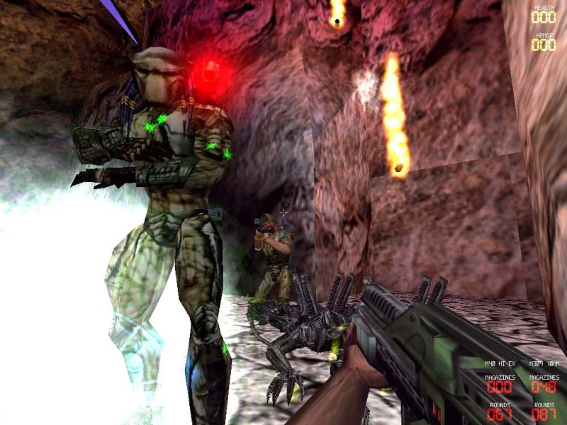
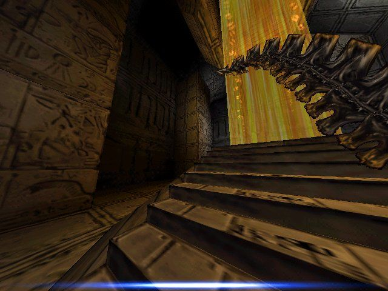
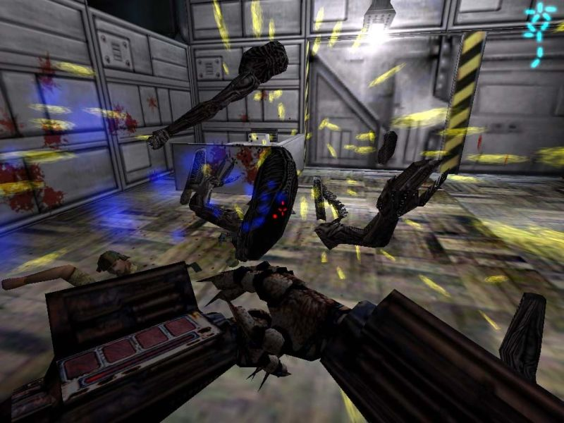
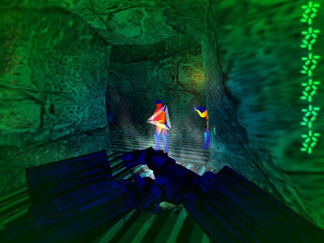

Aliens Versus Predator
Publishing Info
- Published by: Fox Interactive, Inc.
- Developed by: Rebellion Developments Ltd.
- Released: May 28, 1999
Description




Aliens Versus Predator is a sci-fi first-person shooter based on the associated two film franchises.
The game has three playable species, and each has its own single-player campaign with different
missions and plotlines.
- Aliens... Their only weapons are their own body parts: claws for close combat, their deadly tail,
and their inner mouth that can crack through an enemy's skull (for an instant kill) if close enough. They
are deadly at close range, and can heal by eating corpses or the heads of unsuspecting enemies. They can't
be hurt through falls, and an alternate vision mode allows them to see clearly ahead through darkness.
Their strength lies in flexibility and speed, and an ability to cling to walls and run along any surface
- allowing a skilled player to escape or ambush from literally any 3D direction.
- Humans... U.S. Marines, as portrayed by Michael Biehn in the film 'Aliens'. Marines have strong
firepower that ranges from the self-tracking SmartGun, all the way to rocket launchers and devistating
six-barrel miniguns (as seen in 'Predator'). The Marines are the most familiar species to play as, with
the gameplay style of typical FPS hero. However, their frailty at close range, and missions that leave
them stranded, alone, surrounded by bloodthirsty extraterrestrials, make their experience closer to
survival horror.
- Predators... Their power is their strength, and their sight. They have at least four ways of seeing
the environment - standard vision, heat vision (highlighting Marines), electromagnetic vision
(highlighting Aliens), and "Pred-Tech" (for highlighting fellow Predators and their technology). Their
weapons are the most precise, deadly, and ranged of those in the game, being ideally suited to
stealth-based gameplay. Predators also have the ability to zoom their view in and out when seeking
someone, thus allowing them to snipe from afar. Their cloaking ability also renders them nearly
invisible to enemy Marines.
There are several multiplayer modes. For a difficult game, you can pit all the players against the horde
of computer creatures (which includes experimental robotic Aliens and tough Predalien hybrids).
Alternatively, players can choose their favorite species and face each other in an arena-style deathmatch.
Game Categories
- Genre: Action
- Perspective: 1st Person
- Gameplay: Shooter
- Setting: Sci-fi / Futuristic
- Narrative: Horror
Quote
It is rare that a game can change my own personal perception and deeply immerse me into its
world and AvP was successfully at doing this. Many critics were reluctant to put AvP alongside legends
of the genre like Doom, GoldenEye, and Half-Life, but I had no such hesitation and gladly
add AvP to their ranks.
-- Game Critics